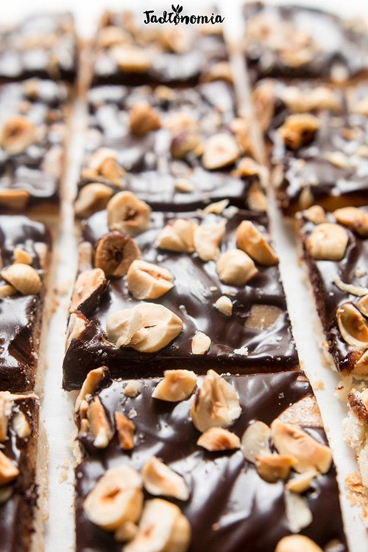

Czas przygotowania: do 45 minut
Składniki na foremkę około 21x28 cm:
Spód lub ten spód bezglutenowy:
1 1/2 szklanki mąki pszennej
5 – 6 łyżek mąki ziemniaczanej
3/4 szklanki / 80 g zimnego oleju kokosowego
1/4 szklanki cukru pudru lub ulubionego syropu
1/4 łyżeczki proszku do pieczenia
1/4 łyżeczki soli
1/4 – 1/3 szklanki zimnej wody
Krem orzechowy:
1/2 szklanki masła orzechowego
2/3 – 1 szklanka kokosowego mleka, tego tłustego z puszki
3 – 5 łyżek syropu klonowego lub z agawy
1/4 łyżeczki soli
Polewa czekoladowa:
1 tabliczka gorzkiej czekolady / 100 g
1/4 – 1/3 szklanki kokosowego mleka, tego tłustego z puszki
Oraz:
garść ulubionych orzechów, podprażonych
Przygotowanie:
Piekarnik rozgrzać do 180 stopni. Do naczynia blendera dodać wszystkie składniki na spód poza wodą i zblendować na okruchy. Stopniowo dodawać po 1 – 2 łyżki zimnej wody i blendować, do momentu, aż zmieni się w elastyczne ciasto – możecie sprawdzić to ręką. Zagnieść w kulkę i włożyć do lodówki. Blender otrzepać, nie trzeba myć 😉 i dodać do niego wszystkie składniki na krem orzechowy, na początku z 1/2 szklanki mleka kokosowego. Zblendować aż do połączenia składników i dodawać pozostałe mleko do momentu, aż krem będzie miał odpowiednią gęstość do posmarowania ciasta. Schłodzone ciasto przełożyć na papier do pieczenia, przykryć drugim arkuszem papieru i rozwałkować na płaski placek. Nakłuć widelcem w kilku miejscach. Włożyć do piekarnika i piec przez około 15 minut do momentu, aż będzie złoty. Kiedy ciasto się piecze przygotować polewę. Połamaną czekoladę dodać do rondelka, wlać kokosowe mleczko i podgrzewać na najmniejszym ogniu mieszając trzepaczką. Kiedy czekolada rozpuści się w połowie zdjąc z ognia i dalej mieszać, zmieni się w kilka sekund w gładką polewę. Upieczony spód schłodzić, posmarować kremem orzechowym, polać polewą i posypać ulubionymi orzechami. Długo wytrzymuje w lodówce, można dojadać nawet po świętach.
Propozycja podania:
